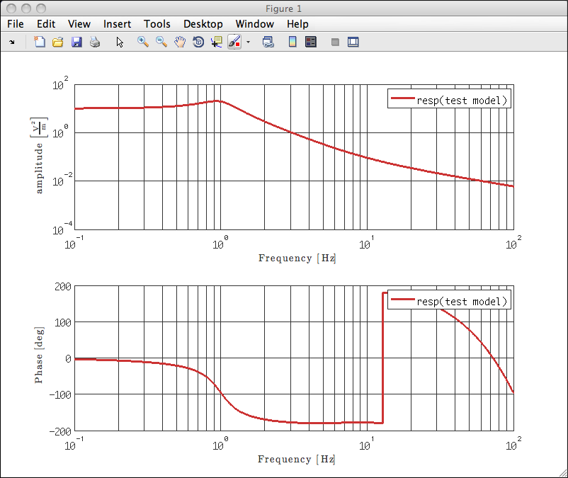

| LTPDA Toolbox™ | contents | |
Poles and zeros can be combined together to create a pole/zero model. In addition to a list of poles and zeros, a gain factor and a delay can be specified such that the resulting model is of the form:

The following sections introduce how to produce and use pole/zero models in the LTPDA environment.
>> pzm = pzmodel(10, {[1 2], 3}, {5, 10}, 0.01)
---- pzmodel 1 ----
name: None
gain: 10
delay: 0.01
iunits: []
ounits: []
pole 001: (f=1 Hz,Q=2)
pole 002: (f=3 Hz,Q=NaN)
zero 001: (f=5 Hz,Q=NaN)
zero 002: (f=10 Hz,Q=NaN)
-------------------
Notice, you can also pass arrays of pz objects to the pzmodel constructor, but this should rarely be necessary.
You can also create a pzmodel by passing a parameter list. The following example shows this
>> pl = plist('name', 'test model', ... 'gain', 10, ... 'poles', {[1 2], 3}, ... 'zeros', {5, 10}, ... 'delay', 0.01, ... 'iunits', 'm', ... 'ounits', 'V^2'); >> pzm = pzmodel(pl) ---- pzmodel 1 ---- name: test model gain: 10 delay: 0.01 iunits: [m] ounits: [V^2] pole 001: (f=1 Hz,Q=2) pole 002: (f=3 Hz,Q=NaN) zero 001: (f=5 Hz,Q=NaN) zero 002: (f=10 Hz,Q=NaN) -------------------
Here we also specified the input units of the transfer function ('iunits') and the output units, ('ounits'). In this case, the model represents a transfer function from metres to Volts squared.
The frequency response of the model can generated using the resp method of the pzmodel class. To compute the response of the model created above:
>> resp(pzm)
Since no output was specified, this command produces the following plot: 
You can also specify the frequency band over which to compute the response by passing a plist to the resp method, as follows:
>> rpl = plist('f1', 0.1, ... 'f2', 1000, ... 'nf', 10000); >> a = resp(pzm, rpl) ----------- ao 01: resp(test model) ----------- name: resp(test model) description: data: (0.1,10.0668830776529-i*0.605439551995965) (0.100092155051679,10.067006787497-i*0.606014805088671) (0.100184395028894,10.0671307268392-i*0.606590636924472) (0.100276720009908,10.0672548961078-i*0.607167048174596) (0.100369130073055,10.0673792957318-i*0.607744039511284) ... ----------- fsdata 01 ----------- fs: NaN x: [1 10000], double y: [1 10000], double xunits: [Hz] yunits: [V^(2)][m^(-1)] t0: 1970-01-01 00:00:00.000 navs: NaN --------------------------------- hist: pzmodel / resp / $Id$ mfilename: mdlfilename: -----------------------------------------------
In this case, the response is returned as an Analysis Object containing fsdata. You can now plot the AO using the iplot function.
| |
Pole/Zero representation | Model helper GUI | |
©LTP Team